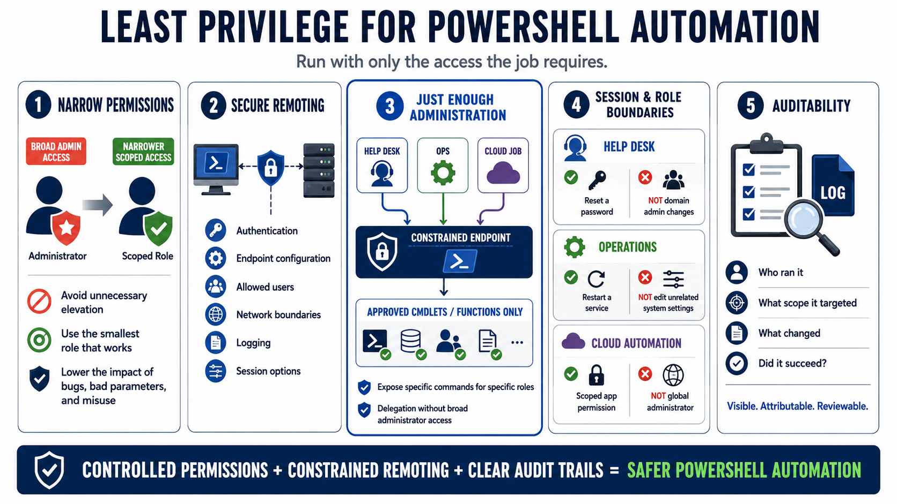

Privilege, Remoting, and Administrative Boundaries
Connecting to LMS... Progress: in progress

Narration
Least privilege is a practical control for PowerShell automation. A script should run with the permissions required for the job, not the broadest permissions available to the operator. Unnecessary elevation increases the impact of bugs, bad parameters, compromised hosts, and misuse. Before running a script as administrator, ask which specific resource changes require elevation and whether a narrower role or delegated permission would work.
PowerShell remoting can support strong administrative workflows when it is configured intentionally. Authentication, endpoint configuration, allowed users, network boundaries, logging, and session options all matter. Just Enough Administration is a useful concept because it limits what delegated operators can do through constrained endpoints. Instead of giving broad administrator access, organizations can expose specific commands or functions for specific roles.
Session configuration and role boundaries help separate tasks. A help desk workflow may need to reset a password but not change domain administrators. An operations workflow may restart a service but not edit unrelated registry paths. A cloud automation job may need a scoped application permission rather than a global administrator role. Narrow boundaries turn automation into a controlled capability instead of an all-purpose administrative tunnel.
Auditability is part of the privilege model. Administrative scripts should make it possible to understand what ran, who initiated it, what scope it targeted, and whether it succeeded. That does not mean logging secrets or excessive personal data. It means designing automation so important actions are visible, attributable, and reviewable. Secure remoting and privilege design should reduce both accidental damage and ambiguity after an event.